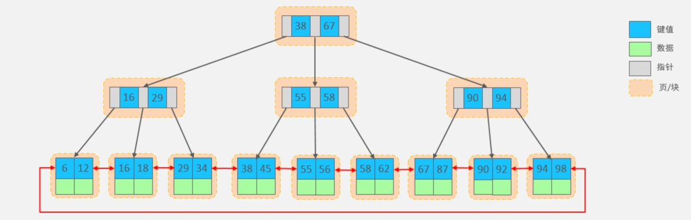

mysql 索引
💥本文章所有相关go代码参考自go 1.18+版本
B+Tree
- 所有的数据都会出现在叶子节点。
- 叶子节点形成一个单向链表。
- 非叶子节点仅仅起到索引数据作用，具体的数据都是在叶子节点存放的。
- MySQL索引数据结构对经典的B+Tree进行了优化。在原B+Tree的基础上，增加一个指向相邻叶子节点 的链表指针，就形成了带有顺序指针的B+Tree，提高区间访问的性能，利于排序。

索引分类
- 在MySQL数据库，将索引的具体类型主要分为以下几类：主键索引、唯一索引、常规索引、全文索引。
| 分类 | 含义 | 特点 | 关键字 |
|---|---|---|---|
| 主键索引 | 针对于表中主键创建的索引 | 默认自动创建, 只能有一个 | PRIMARY |
| 唯一索引 | 避免同一个表中某数据列中的值重复 | 可以有多个 | UNIQUE |
| 常规索引 | 快速定位特定数据 | 可以有多个 | |
| 全文索引 | 全文索引查找的是文本中的关键词，而不是比较索引中的值 | 可以有多个 | FULLTEXT |
- 而在InnoDB存储引擎中，根据索引的存储形式，又可以分为以下两种：
| ——————分类—————— | 含义 | 特点 |
|---|---|---|
| 聚集索引(Clustered Index) | 将数据存储与索引放到了一块，索引结构的叶子节点保存了行数据 | 必须有,而且只有一个 |
| 二级索引(Secondary Index) | 将数据与索引分开存储，索引结构的叶子节点关联的是对应的主键 | 可以存在多个 |
- 聚集索引选取规则：
- 如果存在主键，主键索引就是聚集索引。
- 如果不存在主键，将使用第一个唯一（UNIQUE）索引作为聚集索引。
- 如果表没有主键，或没有合适的唯一索引，则InnoDB会自动生成一个rowid作为隐藏的聚集索引。
- 聚集索引和二级索引的具体结构如下：
- 聚集索引的叶子节点下挂的是这一行的数据。
- 二级索引的叶子节点下挂的是该字段值对应的主键值。
- InnoDB主键索引的B+tree高度为多高呢?
- 一行数据大小为1k，一页中可以存储16行这样的数据。InnoDB的指针占用6个字节的空间，主键即使为bigint，占用字节数为8。
- 如果树的高度为2，则可以存储 18000 多条记录。
- 如果树的高度为3，则可以存储 2200w 左右的记录。
索引语法
- 创建索引。
CREATE [ UNIQUE | FULLTEXT ] INDEX index_name ON table_name (index_col_name,... );
-- name字段为姓名字段，该字段的值可能会重复，为该字段创建索引。
CREATE INDEX idx_user_name ON tb_user(name);
-- phone手机号字段的值，是非空，且唯一的，为该字段创建唯一索引。
CREATE UNIQUE INDEX idx_user_phone ON tb_user(phone);
-- 为profession、age、status创建联合索引。
CREATE INDEX idx_user_pro_age_sta ON tb_user(profession,age,status);
-- 为email建立合适的索引来提升查询效率。
CREATE INDEX idx_email ON tb_user(email);
- 查看索引。
SHOW INDEX FROM table_name;
- 删除索引。
DROP INDEX index_name ON table_name;
SQL性能分析
SQL执行频率
- MySQL 客户端连接成功后，通过 show [session|global] status 命令可以提供服务器状态信息。
- 通过如下指令，可以查看当前数据库的INSERT、UPDATE、DELETE、SELECT的访问频次：
-- session 是查看当前会话;
-- global 是查询全局数据;
SHOW GLOBAL STATUS LIKE 'Com_______';
-- Com_delete: 删除次数
-- Com_insert: 插入次数
-- Com_select: 查询次数
-- Com_update: 更新次数
慢查询日志
- 慢查询日志记录了所有执行时间超过指定参数（long_query_time，单位：秒，默认10秒）的所有SQL语句的日志。
- MySQL的慢查询日志默认没有开启，我们可以查看一下系统变量 slow_query_log。
show variables like 'slow_query_log';
-- OFF-关闭 ON-开启
- 如果要开启慢查询日志，需要在MySQL的配置文件（/etc/my.cnf）中配置如下信息：(重启mysql)
# 开启MySQL慢日志查询开关
slow_query_log=1
# 设置慢日志的时间为2秒，SQL语句执行时间超过2秒，就会视为慢查询，记录慢查询日志
long_query_time=2
- 检查慢查询日志：慢日志文件是 localhost-slow.log。
$ tail -f localhost-slow.log
profile详情
- show profiles 能够在做SQL优化时帮助我们了解时间都耗费到哪里去了。
- 通过have_profiling参数，能够看到当前MySQL是否支持profile操作。
SELECT @@have_profiling;
-- Yes-支持
SELECT @@profiling;
-- 0-关闭
-- 开启，session/global级别开启profiling
SET profiling = 1;
- 查看每一条sql耗时情况：
-- 查看所有sql
show profiles;
-- 查看指定sql，Query_ID
show profile for query 12;
explain
- EXPLAIN 或者 DESC命令获取 MySQL 如何执行 SELECT 语句的信息，包括在 SELECT 语句执行过程中表如何连接和连接的顺序。
-- 直接在select语句之前加上关键字 explain / desc
EXPLAIN SELECT 字段列表 FROM 表名 WHERE 条件 ;
- Explain 执行计划中各个字段的含义:
| 字段 | 含义 |
|---|---|
| id | select查询的序列号，表示查询中执行select子句或者是操作表的顺序(id相同，执行顺序从上到下；id不同，值越大，越先执行) |
| select_type | 表示 SELECT 的类型，常见的取值有 SIMPLE（简单表，即不使用表连接或者子查询）、PRIMARY（主查询，即外层的查询）、UNION（UNION 中的第二个或者后面的查询语句）、SUBQUERY（SELECT/WHERE之后包含了子查询）等 |
| type | 表示连接类型，性能由好到差的连接类型为NULL、system、const、eq_ref、ref、range、index、all |
| possible_key | 显示可能应用在这张表上的索引，一个或多个 |
| key | 实际使用的索引，如果为NULL，则没有使用索引 |
| key_len | 表示索引中使用的字节数，该值为索引字段最大可能长度，并非实际使用长度，在不损失精确性的前提下，长度越短越好 |
| rows | MySQL认为必须要执行查询的行数，在innodb引擎的表中，是一个估计值，可能并不总是准确的 |
| filtered | 表示返回结果的行数占需读取行数的百分比， filtered的值越大越好 |
索引使用
最左前缀法则
- 如果索引了多列（联合索引），要遵守最左前缀法则。
- 最左前缀法则指的是查询从索引的最左列开始，并且不跳过索引中的列。
- 如果跳跃某一列，索引将会部分失效(后面的字段索引失效)。
- 注意：最左前缀法则中指的最左边的列，是指在查询时，联合索引的最左边的字段(即是第一个字段)必须存在，与我们编写SQL时，条件编写的先后顺序无关。
范围查询
- 联合索引中，出现范围查询(>,<)，范围查询右侧的列索引失效。
-- tb_user 表存在联合索引 (profession, age, status)
-- 下面sql中age使用了>符号导致status索引失效，但是profession, age索引还是有用
explain select * from tb_user where profession = '软件工程' and age > 30 and status = '0';
- 在业务允许的情况下，尽可能的使用类似于 >= 或 <= 这类的范围查询，而避免使用 > 或 <。
-- 这种情况下，所有索引都生效了
explain select * from tb_user where profession = '软件工程' and age >= 30 and status = '0';
索引失效
索引列运算
- 不要在索引列上进行运算操作，索引将失效。
-- tb_user表phone是单字段索引，因为使用了函数导致失效
explain select * from tb_user where substring(phone,10,2) = '15';
字符串不加引号
- 字符串类型字段使用时，不加引号，索引将失效。
- 如果字符串不加单引号，对于查询结果，没什么影响，但是数据库存在隐式类型转换，索引将失效。
-- tb_user表phone是单字段索引，类型是varchar
explain select * from tb_user where phone = '17799990015';
-- 没加引号，索引失效
explain select * from tb_user where phone = 17799990015;
模糊查询
- 如果仅仅是尾部模糊匹配，索引不会失效。如果是头部模糊匹配，索引失效。
-- profession 索引生效
explain select * from tb_user where profession like '软件%';
-- profession 索引失效
explain select * from tb_user where profession like '%工程';
-- profession 索引失效
explain select * from tb_user where profession like '%工%';
or连接条件
- 用or分割开的条件， 如果or前的条件中的列有索引，而后面的列中没有索引，那么涉及的索引都不会被用到。
- 当or连接的条件，左右两侧字段都有索引时，索引才会生效。
-- id是主键，age没有索引，该sql不会使用任何索引
explain select * from tb_user where id = 10 or age = 23;
-- phone是普通索引，age没有索引，该sql不会使用任何索引
explain select * from tb_user where phone = '17799990017' or age = 23;
数据分布影响
- 如果MySQL评估使用索引比全表更慢，则不使用索引。
-- 不会使用 phone 索引，因为全表扫描更快
select * from tb_user where phone >= '17799990005';
-- 会使用 phone 索引
select * from tb_user where phone >= '17799990015';
- 因为MySQL在查询时，会评估使用索引的效率与走全表扫描的效率，如果走全表扫描更快，则放弃索引，走全表扫描。
- 因为索引是用来索引少量数据的，如果通过索引查询返回大批量的数据，则还不如走全表扫描来的快，此时索引就会失效。
- is null 与 is not null 操作是否走索引？
- 查询时MySQL会评估，走索引快，还是全表扫描快，如果全表扫描更快，则放弃索引走全表扫描。
- 因此，is null 、is not null是否走索引，得具体情况具体分析，并不是固定的。
explain select * from tb_user where profession is null;
explain select * from tb_user where profession is not null;
SQL提示
- SQL提示，是优化数据库的一个重要手段，简单来说，就是在SQL语句中加入一些人为的提示来达到优化操作的目的。
- use index ： 建议MySQL使用哪一个索引完成此次查询（仅仅是建议，mysql内部还会再次进行评估）。
explain select * from tb_user use index(idx_user_pro) where profession = 'xsss';
- ignore index：忽略指定的索引。
explain select * from tb_user ignore index(idx_user_pro) where profession = 'xsss';
- force index：强制使用索引。
explain select * from tb_user force index(idx_user_pro) where profession = 'xsss';
覆盖索引
- 覆盖索引是指查询使用了索引，并且需要返回的列，在该索引中已经全部能够找到。
- 尽量使用覆盖索引，减少select *。
- 一张表, 有四个字段(id, username, password, status), 由于数据量大, 需要对以下SQL语句进行优化, 该如何进行才是最优方案:
-- 针对于 username, password建立联合索引
-- sql为: create index idx_user_name_pass on tb_user(username,password);
select id,username,password from tb_user where username ='st';
前缀索引
- 当字段类型为字符串（varchar，text，longtext等）时，有时候需要索引很长的字符串，这会让索引变得很大，查询时，浪费大量的磁盘IO， 影响查询效率。
- 此时可以只将字符串的一部分前缀，建立索引，这样可以大大节约索引空间，从而提高索引效率。
create index idx_xxxx on table_name(column(n));
-- 为tb_user表的email字段，建立长度为5的前缀索引
create index idx_email_5 on tb_user(email(5));
- 前缀长度，可以根据索引的选择性来决定，而选择性是指不重复的索引值（基数）和数据表的记录总数的比值，索引选择性越高则查询效率越高， 唯一索引的选择性是1，这是最好的索引选择性，性能也是最好的。
select count(distinct email) / count(*) from tb_user ;
select count(distinct substring(email,1,5)) / count(*) from tb_user ;
单列索引与联合索引
- 单列索引：即一个索引只包含单个列。查询条件中有多个单列索引只会选择一个。
- 联合索引：即一个索引包含了多个列。
- 在业务场景中，如果存在多个查询条件，考虑针对于查询字段建立索引时，建议建立联合索引，而非单列索引。
索引设计原则
- 针对于数据量较大，且查询比较频繁的表建立索引。
- 针对于常作为查询条件（where）、排序（order by）、分组（group by）操作的字段建立索引。
- 尽量选择区分度高的列作为索引，尽量建立唯一索引，区分度越高，使用索引的效率越高。
- 如果是字符串类型的字段，字段的长度较长，可以针对于字段的特点，建立前缀索引。
- 尽量使用联合索引，减少单列索引，查询时，联合索引很多时候可以覆盖索引，节省存储空间，避免回表，提高查询效率。
- 要控制索引的数量，索引并不是多多益善，索引越多，维护索引结构的代价也就越大，会影响增删改的效率。
- 如果索引列不能存储NULL值，请在创建表时使用NOT NULL约束它。当优化器知道每列是否包含NULL值时，它可以更好地确定哪个索引最有效地用于查询。